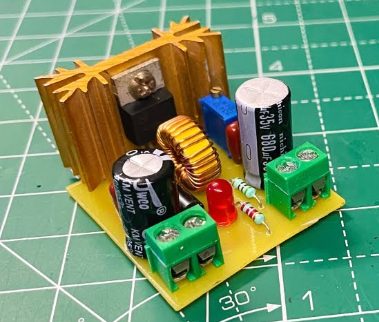

UB 신입 교육 · 전원회로
세상에서 가장 많이 쓰이는 강압 컨버터를 완제품 모듈이 아니라 부품 단위로 직접 만듭니다.

LM2596은 세계에서 가장 많이 팔린 강압 컨버터 IC 중 하나입니다. 아두이노 프로젝트부터 산업용 장비까지, 전원이 필요한 곳이면 어디서나 쓰입니다. 알리익스프레스에서 천 원이면 완제품 모듈을 살 수 있지만, 이번 실습에서는 그걸 부품 단위로 직접 만듭니다.
데이터시트를 읽고 인덕터와 커패시터를 왜 그 값으로 고르는지 따져본 뒤, 만능기판에 배치하고 납땜합니다. 완성하면 12V 어댑터 하나로 3.3V, 5V, 9V를 자유롭게 뽑아 쓸 수 있는 가변 전원이 생깁니다. 앞으로 개인 프로젝트 전원부는 이걸로 해결하시면 됩니다.
오실로스코프로 스위칭 파형을 직접 보고 듀티비와 출력 전압의 관계를 확인하는 시간도 준비했습니다. 전력전자 수업에서 식으로만 봤던 내용을 실물로 만나는 자리입니다.
5번 ON/OFF 핀은 GND에 묶어 항상 동작 상태로 둡니다. 출력 전압은 VR1을 돌려 조정하며, VOUT = 1.23 × (1 + VR1/R1) 로 정해집니다.
| 기호 | 부품 | 사양 | 수량 |
|---|---|---|---|
| U1 | LM2596T-ADJ | TO-220 5핀, 스루홀 | 1 |
| L1 | 파워 인덕터 | 47µH, 정격 3A 이상 | 1 |
| D1 | 1N5822 | 쇼트키 3A 40V | 1 |
| CIN | 전해 커패시터 | 470µF 50V, 저ESR | 1 |
| COUT | 전해 커패시터 | 220µF 50V, 저ESR | 1 |
| CFF | 세라믹 커패시터 | 0.001µF + 0.0022µF 병렬 | 2 |
| R1 | 금속피막 저항 | 680Ω 1% 2개 병렬 = 340Ω | 2 |
| VR1 | 3296W 트리머 | 10kΩ, 25턴 | 1 |
| 품목 | 사양 | 수량 |
|---|---|---|
| 만능기판 | 7 × 9cm | 1 |
| 방열판 | 34 × 25 × 12mm | 1 |
| 체결 나사 | M3 볼트 + 너트 | 1조 |
| 스크류 터미널 | 2핀, 5.08mm 피치 | 2 |
| 배선재 | 주석도금선 | 소량 |
만능기판 배치도와 조립 순서, 첫 통전 절차는 실습 전까지 이 아래에 추가됩니다.